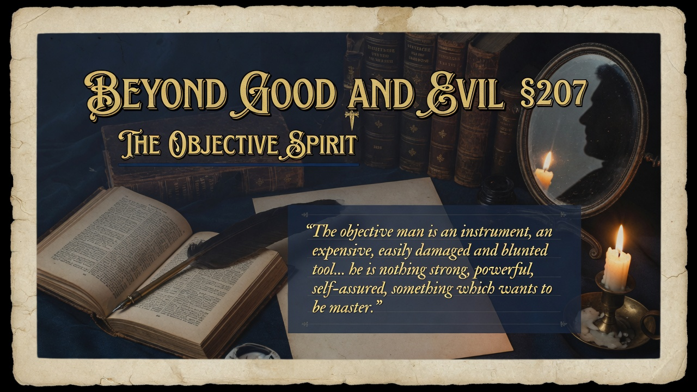

Part Six: We Scholars • Beyond Good and Evil
The ultra-objective scholar is useful like a mirror or measuring tool, but he is not an end in himself. He reflects everything and commands nothing, waiting for someone stronger to give him purpose. Objectivity helps, but it should not rule.
Basically: section 207 delivers a precise and cautionary portrait of the and the ideal scholar who embodies it.. Nietzsche concedes the genuine relief that comes from escaping the exhausting thing people were obsessed wi.... Yet he insists we must learn caution against celebrating the depersonalizing of the spirit as redemption or.... The pessimist school, with its praise of illustrates the exaggeration.
The scholar is a noble instrument, not a goal or a master. Overvaluing objectivity as the highest human achievement mistakes the servant for the legislator.
Contemporary culture produces vast numbers of highly trained objective specialists — academics, analysts, data scientists, journalists — who function superbly as mirrors and measuring devices. The risk is elevating “disinterested” scholarship, pure research, or algorithmic neutrality into the supreme ideal while starving the will that should direct knowledge toward new values and higher forms of life. The free spirit cultivates the objective capacities but refuses to let them become the final horizon. Instruments require stronger hands. mirrors require someone who knows what to reflect and why. Without that commanding perspective, even the finest scholarship remains a refined form of paralysis or drift.
